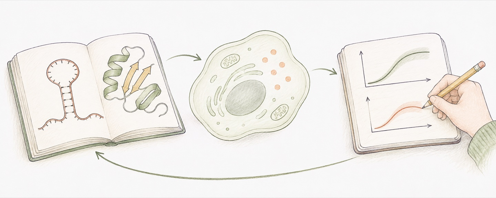

Rational design of microRNA-responsive switch for programmable translational control in mammalian cells
响应 microRNA 的 RNA 翻译开关。
我研究 RNA、蛋白质与可编程生物系统，连接生物信息与细胞功能。

用 RNA 读取细胞信号，调控蛋白输出。
从生物数据中识别细胞状态，寻找可编程系统的输入。
让 RNA 进入细胞、释放，并发挥功能。

响应 microRNA 的 RNA 翻译开关。
以细胞状态信号指导合成启动子设计。
肿瘤免疫微环境的空间与单细胞分析。
用肿瘤转录组研究治疗反应预测。
围绕细胞可编程 RNA 翻译调控的专利申请。
收录于谢震主编的《医学合成生物学》。